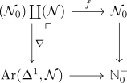

pushout model of the negative natural number in Cat
Proposition
Let $\mathcal{N} \coloneqq \mathbb{N}^-, \mathcal{N}_0 \coloneqq \mathbb{N}_0^-$ be the negative natural numbers regarded as discrete category. Let $\mathbb{N}^-, \mathbb{N}^-_0$ then be the natural numbers regarded as partially ordered set
Then $\mathbb{N}^-$ is given as pushout in Cat infinity for

where the map $f$ is given by
and $\nabla$ is the codiagonal (abusing notation and implicitly using the evident inclusion $\mathcal{N} \hookrightarrow \mathcal{N}_0$)
Proo
model dependent
we may calculate the homotopy pushout (using: homotopy colimit is a model in spaces) where one leg is a cofibration (cf. homotopy pushout of a single cofibration for a left proper model category).
Then a fibrant replacement of the pushout is observed to be $\mathbb{N}^-$